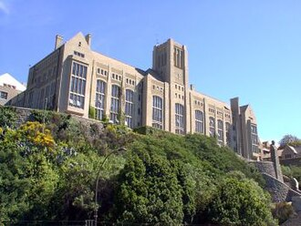
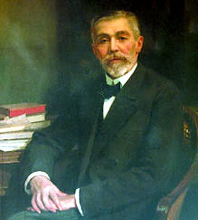
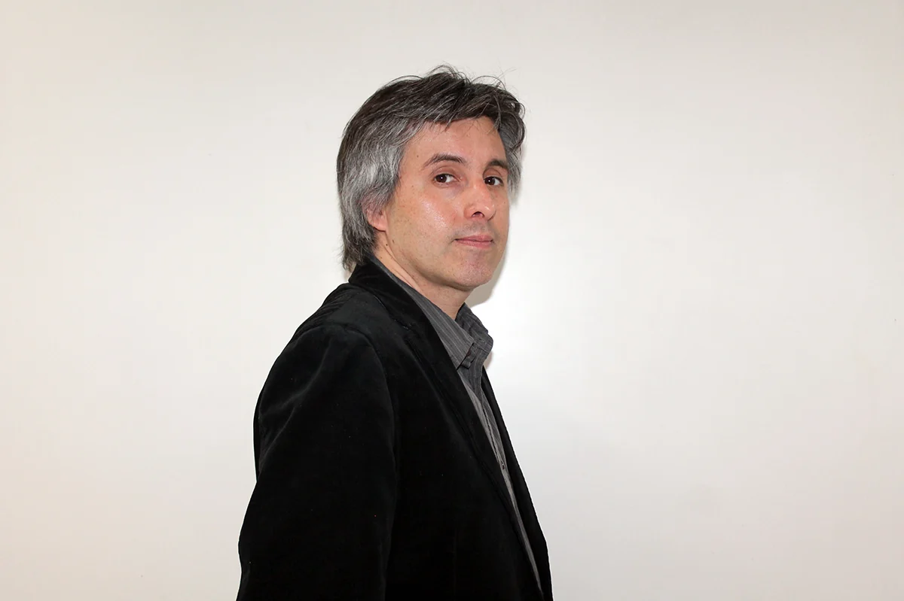
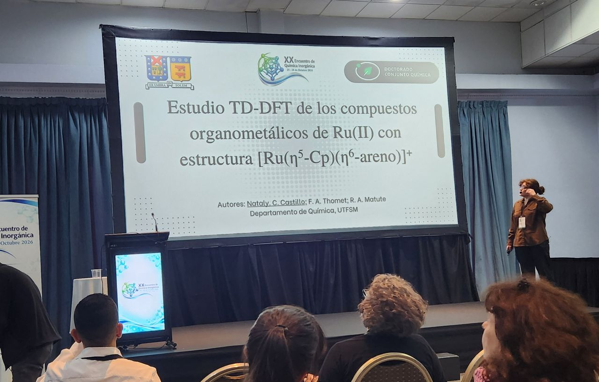
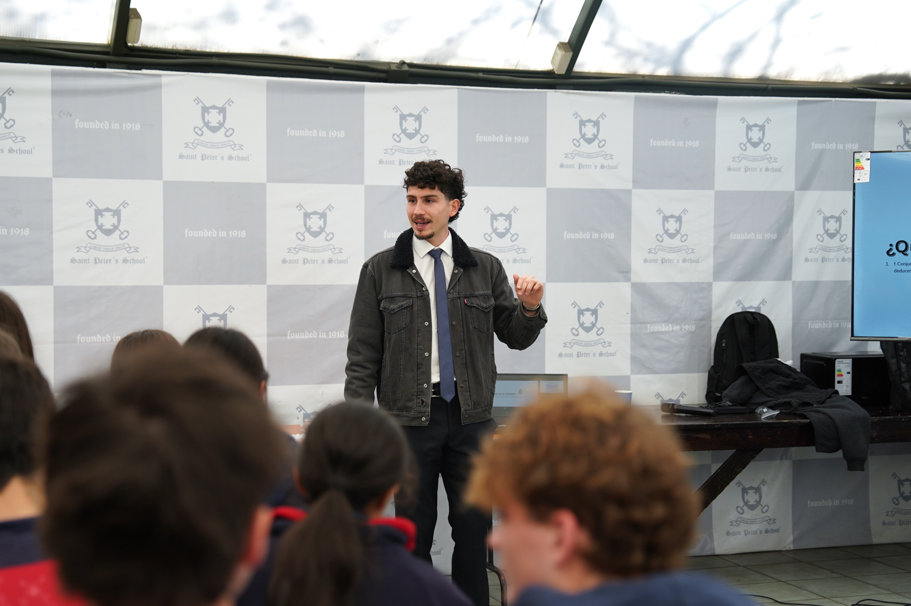

01
Chemical Reaction Mechanisms and Molecular Dynamics
Study of reaction mechanisms, hidden intermediates, potential energy surfaces, and dynamics.
Related projectsCOMPUTATIONAL & THEORY CHEMISTRY
A part of eternity lies in reach of those capable of staring, unblinking at the sea's deranging expanses. - Niels Bohr, a letter to W. Heisenberg
ABOUT THE LAB
Our group combines theoretical and computational tools to understand micro- and macroscopic systems.
Universidad Técnica Federico Santa María (UTFSM)


WHAT WE STUDY
Core themes connecting atomistic mechanisms with functional material design.
Study of reaction mechanisms, hidden intermediates, potential energy surfaces, and dynamics.
Related projectsDevelopment and application of theoretical models to understand electron transfer and the stabilization of intermediates.
Related projectsInvestigation of photochemical processes, excited states.
Related projectsSimulation and modeling of complex molecular systems—including enzymes, proteins, and molecular catalysts—to understand their functional mechanisms and reactivity.
Related projectsSCIENTIFIC OUTPUT
Sándor Volkán-Kacsó, Ricardo A Matute, Maria-Elisabeth Michel-Beyerle, Oganes Khatchikian, Rudolph A Marcus · The Journal of Physical Chemistry B
Gonzalo Jiménez‐Osés, Peng Liu, Ricardo A. Matute, Kendall N. Houk · Angewandte Chemie International Edition
BEHIND THE RESEARCH
A glimpse into our research, collaborations, and academic activities.
THE PEOPLE
Principal investigator, researchers, students and collaborators.

LAB DIRECTOR · PRINCIPAL INVESTIGATOR
Assistan Professor · Departamento de Quimica · UTFSM
Leads a research program in theoretical and computational chemistry, is passionate about Marcus theory, and enjoys observing sharks (certified scuba diver). He obtained his B.Sc. in Biochemistry and Ph.D. in Chemistry from Universidad de Chile, conducting his doctoral research under the joint supervision of Renato Contreras (Universidad de Chile) and Leticia González (University of Vienna). He subsequently carried out postdoctoral research at UCLA with Kendall N. Houk, at USC with Nobel Laureate Arieh Warshel, and at Caltech with Nobel Laureate Rudolph A. Marcus. He is also a Visiting Scientist at the California Institute of Technology (Caltech), in the Division of Chemistry and Chemical Engineering, where he collaborates with the Marcus Research Group and the Rudolph A. Marcus Center for Theoretical Chemistry
Beyond the lab: Outside of science, Ricardo enjoys [hobbies]. He believes [personal value or philosophy about mentoring/science].

PhD student · Theoretical and Experimental Organometallic Chemistry
BSc in Chemistry, Universidad Técnica Federico Santa María (UTFSM)
......

PhD student?, not yet · Theorical and Experimental Chem | Materials - Nanociencie
BSc in Chemistry, Pontificia universidad Catolica de Valparaiso (PUCV),2021.
MSc in Chemistry, Universidad Tecnica Federico Santa Maria (UTFSM),2026.
Aeropress enthusiast, he’s an elite athlete and believes he was Bruce Lee in a past life.
Collaborator, · Theorical Chemistry
Prof. González is currently the head of the Institute of Theoretical Chemistry within the Faculty of Chemistry, at the University of Vienna. Her current research focus is put at using highly accurate electronic structure methods, developing molecular reaction dynamical methods and interfacing both fields to achieve basic understanding of chemical processes and structure-function relationships as well as obtain quantitative predictions in molecules, biological systems and materials.
Collaborator, · Organometallic
Dr. Franz Thomet is a faculty member of the Department of Chemistry at the Universidad Técnica Federico Santa María (UTFSM). His research focuses on inorganic chemistry, particularly the synthesis and characterization of organometallic and coordination compounds. His work also explores the development of metal-based compounds.
Collaborator, · Nanomaterials
Dr. Pugazhenthiran Nalandhiran is an Associate Professor in the Department of Chemistry at the Universidad Técnica Federico Santa María (UTFSM). His research focuses on the development and modification of nanostructured materials for solar energy conversion and environmental applications. His work explores advanced photocatalytic materials, modified photoanodes for solar cells, and nanostructured systems for the degradation of organic pollutants in wastewater, with growing interest in two-dimensional nanomaterials for sustainable energy production and water remediation.
BACKGROUND & EXPERIENCE
Download the principal investigator's academic CV, including education, research experience and selected achievements.
CONTACT
For collaborations, research inquiries or student opportunities, get in touch.
lab.email@university.edu ↗